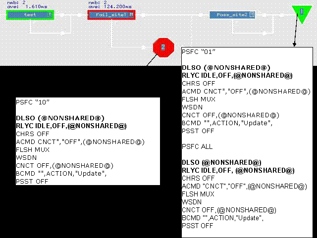

Effects of user-defined disconnect sequence
Replacing the standard disconnect sequence with a user-defined disconnect sequence needs systematic knowledge to avoid damage to your device or to the test system.
A user-defined disconnect sequence can be used to avoid the pass or fail site dependency.
According to the second example file shown in the section User-defined disconnect sequence (which effects the removal of SQST OFF and the other two steps), you can replace the standard disconnect sequence in disconnect.user_def with your user-defined disconnect sequence.
With the MCDLog (introduced in Using the Trace Function), you can observe the software behavior.
Example
In a 2-site test flow, site 1 fails and site 2 passes. In the picture, site 1 is in focus.
The MCDLog file for disconnecting each site after binning is shown:

Effects of using the above user-defined disconnect sequence are:
- Shared pins among multi-site remain connected after test flow execution.
- Sequencers are not switched off for the purpose of keeping the clock alive.
- SmarTest will issue an error message at the next test flow execution due to running sequencers. This can be solved by executing conditional "final" disconnect, which means executing an additional "final" disconnect of all pins including "SQST OFF" via a FW_TASK API at every stop bin when binning of the very last site happens.
Functional changes
- Introduced before SmarTest 6.3.2
- SmarTest 7.2.3: SmarTest startup behavior changed